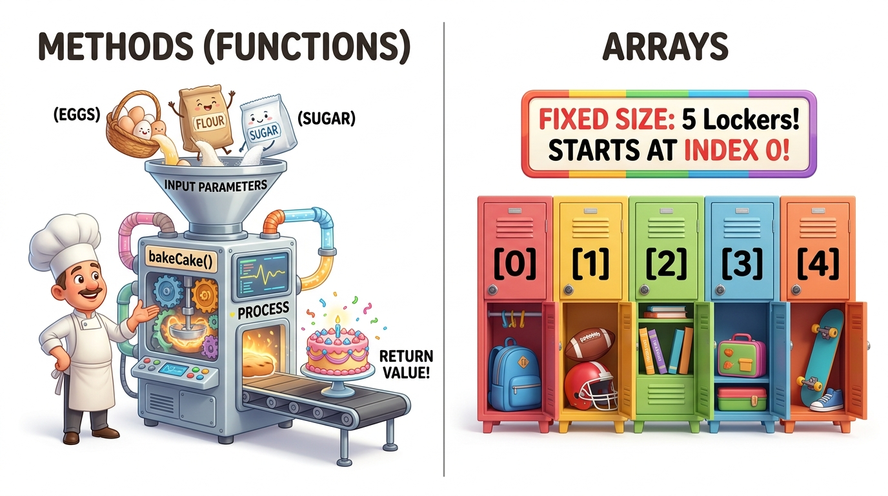

Bridge 4 — Methods & Arrays
Writing every line of code inside one gigantic main method leads to unreadable "spaghetti code."
Professional engineers break programs into small, reusable building blocks called Methods
and organize related data in contiguous memory structures called Arrays.
Today you learn how to pass parameters, return values, understand Java's pass-by-value mechanics,
and wield 0-indexed arrays without ever crashing on an out-of-bounds error.
- Deconstruct the anatomy of a Java method: access modifiers, return types, parameters, and bodies.
- Explain why Java is strictly pass-by-value and how stack memory frames isolate local variables.
- Apply method overloading to create flexible APIs with distinct parameter signatures.
- Declare, instantiate, and initialize 1D and 2D arrays in contiguous memory.
- Traverse arrays using both classic indexed
forloops and enhancedfor-eachloops. - Prevent and debug the notorious
ArrayIndexOutOfBoundsException.
Your Learning Roadmap
1. Why Modular Methods?
In software engineering, the DRY Principle stands for "Don't Repeat Yourself". If you copy-paste the same 10 lines of calculation code into three places in your program, you create three places where bugs can hide.
A Method is a self-contained, named sub-routine that takes inputs (arguments), performs a specific task, and optionally returns a result back to the caller.
2. The Kitchen Appliance & Locker Cubbies Analogy

3. Anatomy of a Java Method
Let's inspect a complete method that calculates the total price of an order with sales tax:
public class MethodDemo {
public static void main(String[] args) {
double total = calculateTotal(150.0, 0.08); // Method Call
System.out.println("Final Bill: $" + total);
}
// Method Declaration
public static double calculateTotal(double subtotal, double taxRate) {
double tax = subtotal * taxRate;
return subtotal + tax; // Value returned to caller
}
}| Keyword / Token | Role in Method | Explanation |
|---|---|---|
public | Access Modifier | Can be called from anywhere in the application. |
static | Class Method | Belongs to the class itself; can be called without creating an object with new. |
double | Return Type | The data type of the value this method promises to send back. Use void if returning nothing. |
calculateTotal | Method Name | LowerCamelCase verb describing the action performed. |
(double subtotal, double taxRate) | Parameters | The input variables required by the method, separated by commas. |
return | Return Statement | Exits the method immediately and hands the calculated result back to the caller. |
4. The Big Secret: Java is Strictly Pass-by-Value
A huge point of confusion for beginners is what happens when you pass a variable into a method:
public class PassByValueDemo {
public static void main(String[] args) {
int balance = 50;
addBonus(balance); // Pass balance into method
System.out.println("Balance after call: " + balance); // Prints 50, NOT 70!
}
public static void addBonus(int balance) {
balance = balance + 20; // Only modifies local copy inside addBonus stack frame!
}
}addBonus(balance), Java creates a completely separate stack frame for addBonus.
It copies the number 50 into a new local parameter also named balance.
When addBonus finishes, its stack frame is instantly destroyed. The original balance in main remains 50!
5. Method Overloading
Method Overloading is when multiple methods in the same class share the exact same name, but have different parameter lists (different number of parameters, different data types, or different order):
public class OverloadDemo {
// Version 1: takes two integers
public static int add(int a, int b) { return a + b; }
// Version 2: takes three integers
public static int add(int a, int b, int c) { return a + b + c; }
// Version 3: takes two doubles
public static double add(double a, double b) { return a + b; }
}Java automatically knows which version to invoke based on the arguments you provide at compile-time!
6. Mastering Java Arrays
An Array is a fixed-size container that holds multiple values of the exact same data type in contiguous RAM memory slots.
A. Declaring & Allocating Arrays
// Approach 1: Allocate empty array of 4 ints (default values are 0)
int[] scores = new int[4];
scores[0] = 95;
scores[1] = 88;
scores[2] = 72;
scores[3] = 91;
// Approach 2: Array literal shortcut (size inferred automatically as 3)
String[] heroes = {"Batman", "Spider-Man", "Iron Man"};B. The Golden Rule of 0-Indexing
In Java, array indexing starts at 0, not 1:
- The first element is at index
0. - The last element is at index
length - 1. array.lengthtells you the total capacity of the array (notice: no parentheses!).
7. Traversing Arrays: Classic vs Enhanced For-Each Loop
String[] fruit = {"Apple", "Banana", "Cherry"};
// Option 1: Classic indexed for loop (use when you need the index number i)
for (int i = 0; i < fruit.length; i++) {
System.out.println("Slot " + i + ": " + fruit[i]);
}
// Option 2: Modern Enhanced for-each loop (cleaner for reading every element)
for (String f : fruit) {
System.out.println("Delicious " + f);
}💻 Interactive Simulator: The Array Locker Inspector
Click the lockers below to inspect values, modify elements, and test boundary conditions:
int[] scores = new int[5];⚠️ Top 3 Beginner Traps in Methods & Arrays
int[] list = new int[5];
for (int i = 0; i <= list.length; i++) { // ERROR: <= instead of <
System.out.println(list[i]);
}Error: ArrayIndexOutOfBoundsException: Index 5 out of bounds for length 5
The Fix: Always use i < list.length (strictly less than), never <=.
Beginners often ask: "How do I add a 6th element to an array of size 5?"
The Reality: You cannot! Once created, a Java array's size is permanently fixed in RAM. If you need dynamic expansion, you use ArrayList (which you will master in Session 1).
📝 Knowledge Check
int[] data = new int[10];?boolean[] flags = new boolean[3];?false (numeric arrays default to 0, and object reference arrays default to null).
🛠 Guided Lab: Student Grade Analyzer
GradeAnalyzer.
main, create an array with 6 exam scores: int[] marks = {78, 92, 85, 64, 99, 73};.
public static double findAverage(int[] numbers) that returns the class average.
public static int findHighest(int[] numbers) that loops and finds the top score.
main and display a clean statistical report to the terminal.
📺 Recommended Further Study
Understand how computers lay out arrays contiguously in RAM memory bytes.
▶ Watch on YouTubeClear walkthrough of method syntax, return types, and arguments.
▶ Watch on YouTube